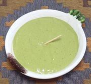

|
Aji Huacatay Sauce / DipPeru - Aji Huacatay | ||||
| Makes: Effort: Sched: DoAhead: |
1 cup ** 30 min Yes |
a popular Peruvian sauce, made using a unique Peruvian herb. It is most used with Chicken. | |||
|
2 2 2 3 1/4 2 1/2 1 1/2 1/4 |
T T cl c T c T t t |
Aji Amarillo Paste (1) Huacatay Paste (2) Garlic Scallions Cilantro Olive Oil (3) Mayonnaise (4) Lime Juice Salt Pepper |
Make - (30 min)
|